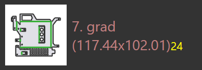

Nestingmodi
De nestingtool in TecZone Laser kan op een efficiënte manier lay-outs samenstellen vanuit een nesting job. U kunt ook een van de geneste lay-outs nemen (of zelfs beginnen met een lege plaat) en interactief stukken toevoegen, verplaatsen en draaien.
Automatisch nesten
In eerste instantie voegt u platen en stukken toe aan een nesting job. Wanneer u vervolgens overschakelt naar het tabblad*Layouts* wordt automatisch een nesting uitgevoerd. Vervolgens kunt u de lijst met stukken wijzigen of enkele instellingen wijzigen en dan hebben we een aantal opties om de stukken met verschillende instellingen opnieuw te nesten.
Meer stukken aan een plaat toevoegen
Laten we aannemen dat u een paar extra stukken heeft toegevoegd aan de nesting job, en deze nog niet genest zijn. Om de nestingtool te gebruiken om deze stukken op de plaat te plaatsen, selecteer eerst de layout[1] u wilt gebruiken (vaak is dit de laatste plaat, die waarschijnlijk slechts gedeeltelijk gevuld is). Klik vervolgens op het pictogram Nest in de werkbalk aan links en selecteer vervolgens Pack remaining sheet area automatically. [2]

De stukken die nog moeten worden genest, worden op het resterende gedeelte van de plaat geplaatst.Deze optie verandert niets aan de stukken die al op de plaat zijn geplaatst, en wordt soms gebruikt om een plaat gedeeltelijk handmatig te nesten, en dan te de nestingtool te vragen om de rest van het nesten te voltooien. De onderstaande afbeelding toont de nieuw toegevoegde stukken met een gele kleur, en u kunt zien dat de oudere stukken niet zijn verplaatst:

Herschikken - restplaat
Als u de posities van de oudere stukken niet hoeft te behouden, kunt u betere resultaten krijgen door de nestingtool te vragen om de hele plaat te herschikken.Kies de Rearrange to create a remainder sheet, en TecZone Laser zal alle stukken op de plaat opnieuw nesten, in een poging om een schone, rechthoekige restplaat aan de rechterkant te krijgen, die als onbewerkt materiaal kan worden gebruikt voor een toekomstige nesting.

U kunt zien dat de bovenstaande plaat dezelfde stukken heeft als voorheen, maar strakker op elkaar, waardoor een restplaat kan worden afgesneden voor gebruik.
Herschikken - volledige plaat gebruiken
Als de restplaat te klein is om bruikbaar te zijn, is het handig om de nestingtool te vragen om de plaat wat losser in te delen, waardoor nog steeds alle stukken op de plaat passen, maar de afstand tussen de stukken wordt vergroot om het hele oppervlak van de plaat te gebruiken. Dat kan door Rearrange to use full sheet te selecteren in het menu:
Handmatig nesten
Open een lay-out om te bewerken via het tabblad Lay-outs van het venster Job, of door een .fxlyt-bestand te openen dat u eerder heeft opgeslagen.
Stukken toevoegen
U kunt stukken toevoegen aan de lay-out door te klikken op de knop Add in de linker werkbalk. Een lijst van alle stukken in de nesting job wordt weergegeven:

Door op een stuk in de lijst te klikken, wordt het aan de plaat toegevoegd (de nestingtool wordt gebruikt een optimale positie voor het stuk te vinden, maar dat kunt u later wijzigen). De stuklegenda’s gebruiken verschillende kleuren voor verschillende betekenissen zoals hieronder vermeld:
|
12 stukken genest (ingesteld aantal) |
|
2 stukken minder genest dan ingesteld |
|
18 onderdelen ingesteld, 20 genest (+2) |
 |
Ingestelde aantal van 24 stukken genest |


Terwijl u met de muis over stukken in de stuklijst beweegt, berekent TecZone Laser een goede plaatsingspositie voor het stuk en plaatst het tijdelijk op de plaat in blauwe kleur, zodat u kunt beoordelen of het goed past. U kunt dus een aantal stukken snel op de plaat plaatsen door met de muis over ze heen te bewegen en te klikken.

| Zodra stukken op de plaat zijn geplaatst, kunnen ze worden verplaatst, gedraaid of herhaald met behulp van het Plaatsingsvenster. |